On the use of local ˆR to improve MCMC convergence diagnostic
Théo Moins, Julyan Arbel, Stéphane Girard, Anne Dutfoy
5/2/2022
library("EnvStats")
library('jmuOutlier')
library("ggplot2")
library("rstan")
devtools::load_all()
source(paste(r_folder, "import/monitornew.R", sep=""))
source(paste(r_folder, "import/r_star_monitor.R", sep=""))
reps <- 500\[\begin{equation} \label{eq:R_theorique} R(x) = \sqrt{\frac{W(x)+B(x)}{W(x)}} = \sqrt{1 + \frac{\sum_{j=1}^m\sum_{k=j+1}^m \left(F_j(x)-F_k(x)\right)^2}{m\sum_{j=1}^m F_j(x)(1-F_j(x))}}. \end{equation}\]
1 Known distributions on the chains
1.1 Counter examples for \(\hat{R}\)
1.1.1 Example (i): Uniform distribution
As a first example we consider \(m\) chains following centered uniform distributions, with the last having a different support than the other: \[\begin{align*} F_1(x) &= \cdots = F_{m-1}(x) = \frac{x}{2\sigma} + \frac{1}{2}, \quad \forall x \in \left[-\sigma; \sigma\right],\\ \text{and}\quad F_m(x) &= \frac{x}{2\sigma_m} + \frac{1}{2}, \quad \forall x \in \left[-\sigma_m; \sigma_m\right]. \end{align*}\]
In such a case the expression of \(R(x)\) is explicit and can be compared to the estimator \(\hat{R}(x)\): to illustrate we choose \(m=4\) chains, \(\sigma = 3/4\) and \(\sigma_m = 1\).
sigma <- 3/4
sigmaM <- 1
M <- 4
N <- 200
uniform_dists <- c(rep(c((function(q) punif(q, -sigma, sigma))), M-1),
(function(q) punif(q, -sigmaM, sigmaM)))
theoretical_r_values <- r_dist_values(npoints = N, xlim = c(-sigmaM, sigmaM),
dists = uniform_dists)
uniform_rdists <- c((function(n) runif(n, -sigma, sigma)),
(function(n) runif(n, -sigmaM, sigmaM)))
chains = gen_chains(M, N, uniform_rdists)
rhat_infinity(chains, verbose = T)Threshold at confidence level 5%: 1.0195
Local R-hat obtained: 1.0476
p-value: < 0.001
WARNING: A convergence issue has been diagnosed[1] 1.047596simulated_rhat = all_local_rhat(chains, max_nb_points = "ALL")
xlabels <- c(1, 1.02, 1.04, 1.06, 1.08)
plot_local_r(chains, simulated_rhat, theoretical_r_values, col=c(colors[3], colors[2]),
xlabels = xlabels, plot_legend = FALSE,
xlim = c(-1,1), ylim=c(1,1.09), title ="")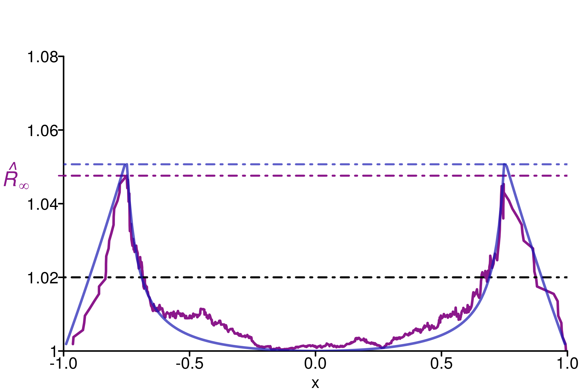
We can see that \(\hat{R}(x)\) (in violet) slightly overestimate \(R(x)\), which makes it more conservative than the population value.
We replicate the experiment 500 times and study the histogram of replications of different versions of \(\hat{R}\):
r_functions <- c(trad_rhat, rhat, rhat_infinity)
r_names <- c("R-hat",
"Rank-R-hat",
"R-hat-infinity")
r_colors <- c(colors[4], colors[5], colors[3])
R_matrix_unif <- repetitions_R(chains_func = (function() gen_chains(M, N, uniform_rdists)),
r_func = r_functions,
r_names = r_names,
reps = reps)
xlabels <- c(1, 1.02, 1.04, 1.06, 1.08, 1.1)
plot_hist(R_matrix_unif, colors = r_colors, xlabels = xlabels,
bin_size = 0.005, lim_y_axis = reps, plot_legend = F)
As constructed initially by Vehtari et al. (2021), this example fool the original \(\hat{R}\). The rank version and \(\hat{R}_\infty\) is on the contrary robust in this case.
1.1.2 Example (ii): Pareto distribution
Similarly, we check the second counter-example that fool the original \(\hat{R}\): chains with heavy-tails and different locations. To do so we consider Pareto distributions on the chains: \[\begin{align*} F_1(x) &= \cdots = F_{m-1}(x) = 1 - \left({x}/{\eta}\right)^{-\alpha}, \quad \forall x \in [\eta, +\infty),\\ \text{and}\quad F_m(x) &= 1 - \left({x}/{\eta_m}\right)^{-\alpha}, \quad \forall x \in [\eta_m, +\infty). \end{align*}\]
As an example, we choose \(\alpha = 0.8 \leq 1\) to ensure infinite moments and \((\eta, \eta_m) = (1, 1.5)\):
eta <- 1
etaM <- 1.5
alpha <- 0.8
M <- 4
pareto_dists <- c(rep(c((function(q) ppareto(q, location = eta, shape = alpha))), M-1),
(function(q) ppareto(q, location = etaM, shape = alpha)))
theoretical_r_values <- r_dist_values(npoints = 1000, xlim = c(-eta, eta*8),
dists = pareto_dists)
pareto_rdists <- c((function(n) rpareto(n, location = eta, shape = alpha)),
(function(n) rpareto(n, location = etaM, shape = alpha)))
xlabels <- c(1, 1.02, 1.04, 1.06, 1.08)
chains <- gen_chains(M, N, pareto_rdists)
rhat_infinity(chains, verbose = T)Threshold at confidence level 5%: 1.0195
Local R-hat obtained: 1.0498
p-value: < 0.001
WARNING: A convergence issue has been diagnosed[1] 1.049801simulated_rhat <- all_local_rhat(chains, max_nb_points = "ALL")
plot_local_r(chains, simulated_rhat, theoretical_r_values,
plot_legend = FALSE, col=c(colors[3], colors[2]),
xlabels = xlabels, xlim = c(1,8), ylim=c(1,1.09), title ="")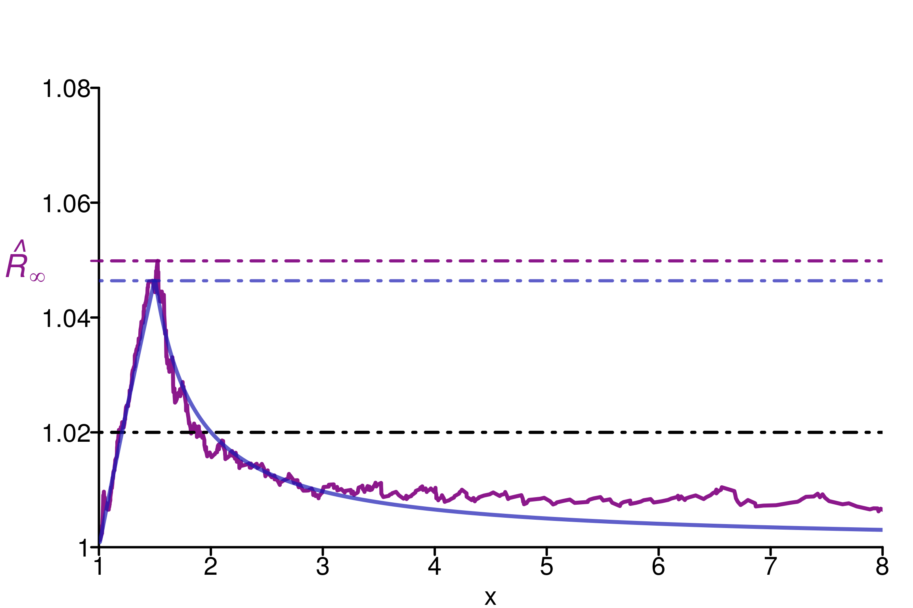
The same observations as for the previous example can be done here: \(\hat{R}_\infty\) overestimates \(R_\infty\), whose value already allowed the diagnosis of a convergence issue. We can verify the behaviour on replications:
r_functions <- c(trad_rhat, rhat, rhat_infinity)
r_names <- c("R-hat", "Rank-R-hat", "R-hat-infinity")
r_colors <- c(colors[4], colors[5], colors[3])
R_matrix_pareto <- repetitions_R(chains_func = (function() gen_chains(M, N, pareto_rdists)),
r_func = r_functions,
r_names = r_names,
reps = reps)
xlabels = c(1, 1.02, 1.04, 1.06, 1.08)
plot_hist(R_matrix_pareto, colors = r_colors, xlabels = xlabels,
plot_legend = FALSE, bin_size = 0.005, lim_y_axis = 500)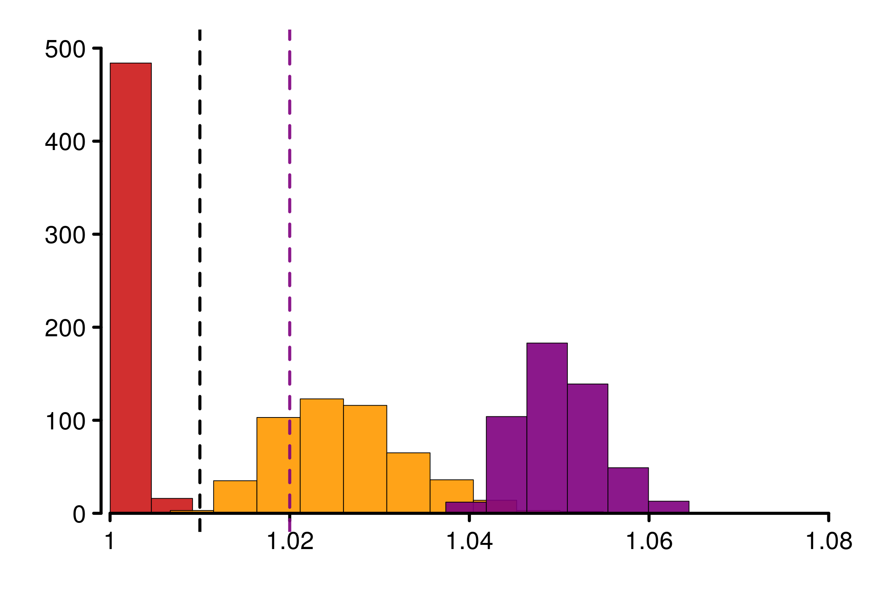
1.2 Counter examples for rank-\(\hat{R}\)
In this part, We will see 3 cases where rank-\(\hat{R}\) doesn’t manage to detect the convergence issue. These cases correspond to chains with different type of distributions, but with same mean and mean over the median.
1.2.1 Example (iii): Uniform and Laplace distributions
We start by an example where the population version can be computed explicitly: if one chain is uniformly distributed \(\mathcal{U}(-2\sigma, 2\sigma)\) and another one from a Laplace distribution \(\mathcal{L}(0, \sigma)\), where \(\sigma>0\), then calculations leads to \(R_\infty \approx 1.018\), which means convergence issue.
sigma <- 1/4
M <- 2
dists <- c((function(q) punif(q, -2*sigma, 2*sigma)),
(function(q) plaplace(q, mean = 0, sd = sqrt(2)*sigma)))
theoretical_r_values <- r_dist_values(npoints = 1000, xlim = c(-1.5, 1.5),
dists = dists)
rdists <- c((function(n) runif(n, -2*sigma, 2*sigma)),
(function(n) rlaplace(n, mean = 0, sd = sqrt(2)*sigma)))
chains <- gen_chains(M, N, rdists)
rhat_infinity(chains, verbose = T)Threshold at confidence level 5%: 1.0125
Local R-hat obtained: 1.0244
p-value: 0.001
WARNING: A convergence issue has been diagnosed[1] 1.024427simulated_rhat <- all_local_rhat(chains, max_nb_points = "ALL")
xlabels <- c(1, 1.01, 1.02, 1.03)
plot_local_r(chains, simulated_rhat, theoretical_r_values, threshold = 1.01,
xlabels = xlabels, col = c(colors[3], colors[2]),
xlim = c(-1.5,1.5), ylim=c(1,1.03), title ="")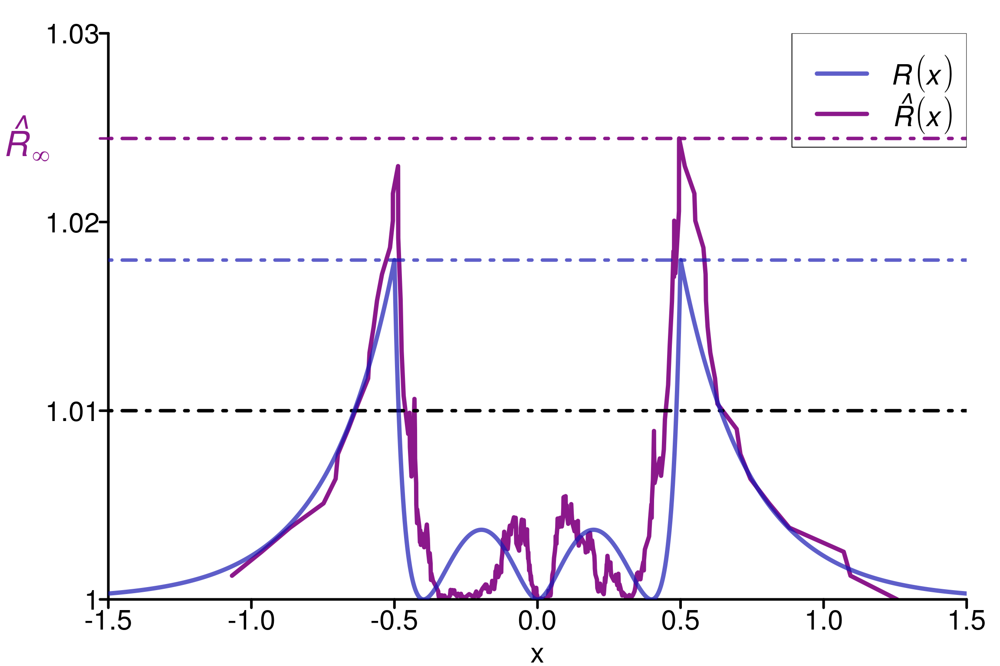
Replications show that rank-\(\hat{R}\) is fooled in the same way as \(\hat{R}\) in this example:
r_functions <- c(trad_rhat, rhat, rhat_infinity)
r_names <- c("R-hat", "Rank-R-hat", "R-hat-infinity")
r_colors <- c(colors[4], colors[5], colors[3])
R_matrix_lapl_unif <- repetitions_R(chains_func = (function() gen_chains(M, N, rdists)),
r_func = r_functions,
r_names = r_names,
reps = reps)
xlabels = c(1, 1.01, 1.02, 1.03, 1.04)
plot_hist(R_matrix_lapl_unif, colors = r_colors, bin_size = 0.003,
xlabels = xlabels, plot_legend = TRUE, threshold = 1.01,
lim_y_axis = reps, vaxis_pos = 0.9985)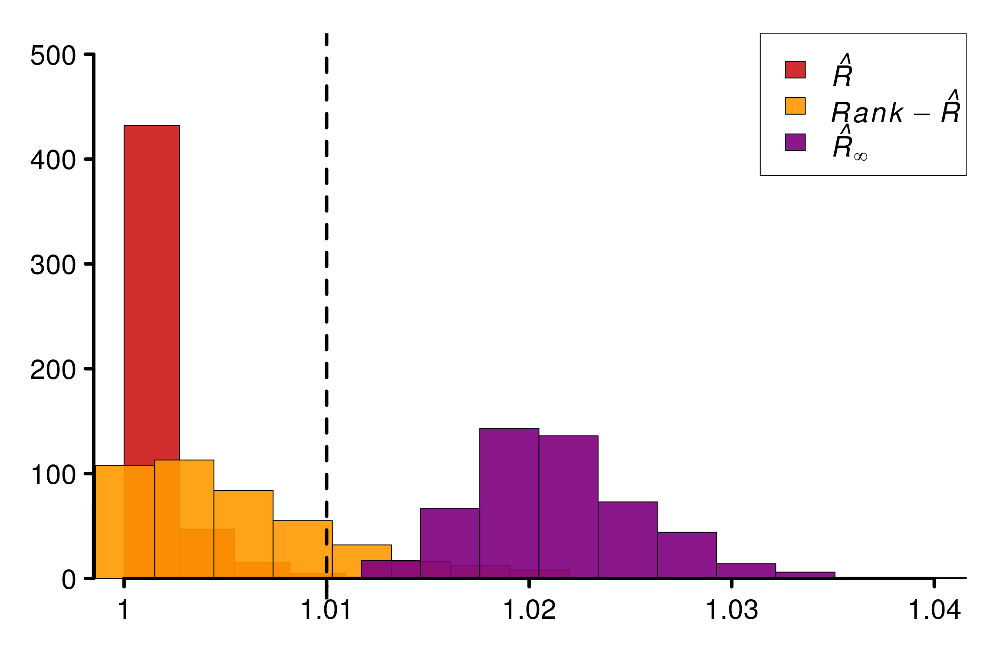
1.2.2 Example (iv): Uniform and Normal distributions
Similarly, others distributions are possible to build counter-examples. Consider \(m-1\) normal chains \(\mathcal{N}\left(0, \frac{\pi}{2}\sigma^2\right)\) and for the last one a uniform \(\mathcal{U}(-2\sigma, 2\sigma)\):
sigma <- 1/2
M <- 2
dists <- c((function(q) pnorm(q, mean = 0, sd = sqrt(0.5*pi)*sigma)),
(function(q) punif(q, -2*sigma, 2*sigma)))
theoretical_r_values <- r_dist_values(npoints = 1000, xlim = c(-2, 2),
dists = dists)
rdists <- c((function(n) rnorm(n, mean = 0, sd = sqrt(0.5*pi)*sigma)),
(function(n) runif(n, -2*sigma, 2*sigma)))
chains <- gen_chains(M, 2*N, rdists)
rhat_infinity(chains, verbose = T)Threshold at confidence level 5%: 1.0125
Local R-hat obtained: 1.0194
p-value: 0.003
WARNING: A convergence issue has been diagnosed[1] 1.019354simulated_rhat <- all_local_rhat(chains, max_nb_points = "ALL")
xlabels <- c(1, 1.005, 1.01, 1.015, 1.02)
plot_local_r(chains, simulated_rhat, theoretical_r_values,
xlabels = xlabels, col=c(colors[3], colors[2]), threshold = 1.01,
xlim = c(-2,2), ylim=c(0.999,1.025), title ="Gaussian/Uniform distributions")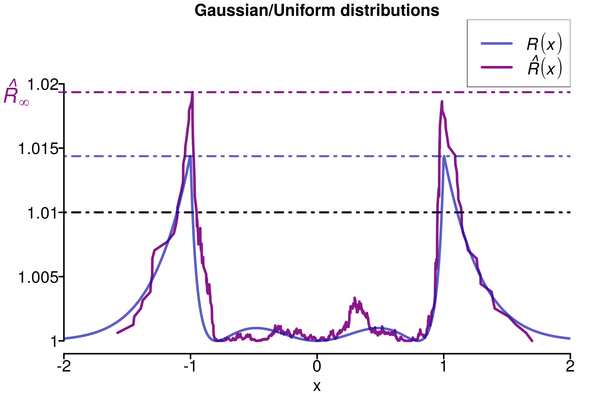
Replications confirms that this construction are fooling the different versions of \(\hat{R}\) except \(\hat{R}_\infty\).
r_functions <- c(trad_rhat, rhat, rhat_infinity)
r_names <- c("R-hat", "Rank-R-hat", "R-hat-infinity")
r_colors <- c(colors[4], colors[5], colors[3])
R_matrix_norm_unif <- repetitions_R(chains_func = (function() gen_chains(M, N, rdists)),
r_func = r_functions,
r_names = r_names,
reps = reps)
xlabels = c(1, 1.01, 1.02, 1.03)
plot_hist(R_matrix_norm_unif, colors = r_colors, xlabels = xlabels,
bin_size = 0.002, plot_legend = TRUE, threshold = 1.01,
lim_y_axis = reps, vaxis_pos = 0.999)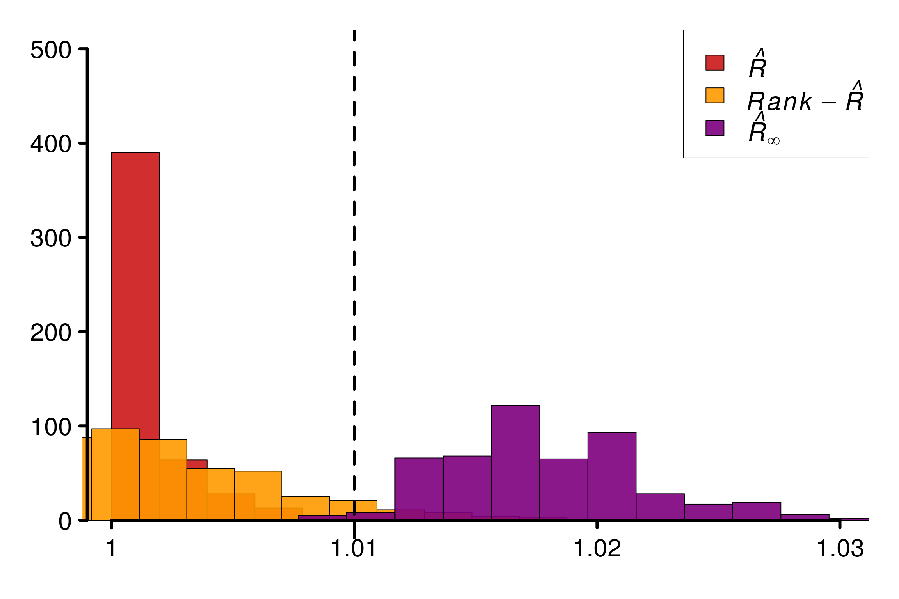
1.2.3 Example (v): Uniform and Exponential distributions
Finally, it is also possible to mix uniform distributions with exponential:
M <- 4
N <- 200
min_unif <- 1-2*log(2)
max_unif <- 1+2*log(2)
dists <- c(rep(c((function(q) pexp(q))), M-1),
(function(q) punif(q, min_unif, max_unif)))
theoretical_r_values <- r_dist_values(npoints = 500, xlim = c(-1, 6),
dists = dists)
rdists <- c((function(n) rexp(n)),
(function(n) runif(n, min_unif, max_unif)))
chains <- gen_chains(M, N, rdists)
rhat_infinity(chains, verbose = T)Threshold at confidence level 5%: 1.0195
Local R-hat obtained: 1.0545
p-value: < 0.001
WARNING: A convergence issue has been diagnosed[1] 1.054547simulated_rhat <- all_local_rhat(chains, max_nb_points = "ALL")
xlabels <- c(1, 1.02, 1.04, 1.06, 1.08)
plot_local_r(chains, simulated_rhat, theoretical_r_values,
xlabels = xlabels, col = c(colors[3], colors[2]),
xlim = c(-1, 6), ylim=c(1,1.09), title ="")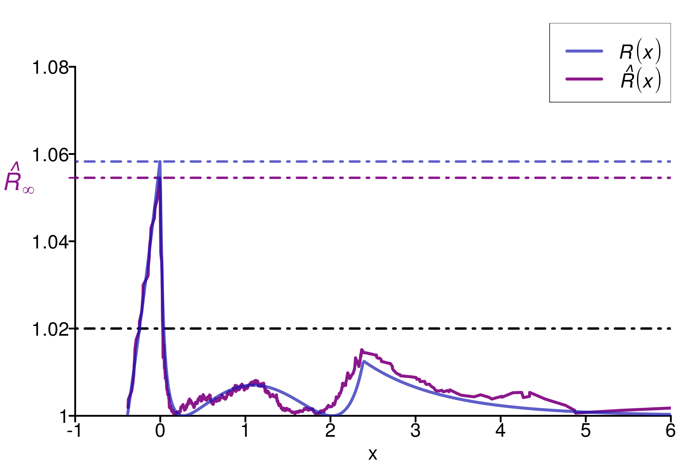
r_functions <- c(trad_rhat, rhat, rhat_infinity)
r_names <- c("R-hat", "Rank-R-hat", "R-hat-infinity")
r_colors <- c(colors[4], colors[5], colors[3])
R_matrix_exp_unif <- repetitions_R(chains_func = (function() gen_chains(M, N, rdists)),
r_func = r_functions,
r_names = r_names,
reps = reps)
plot_hist(R_matrix_exp_unif, colors = r_colors, bin_size = 0.007,
lim_y_axis = 500, vaxis_pos = 0.997)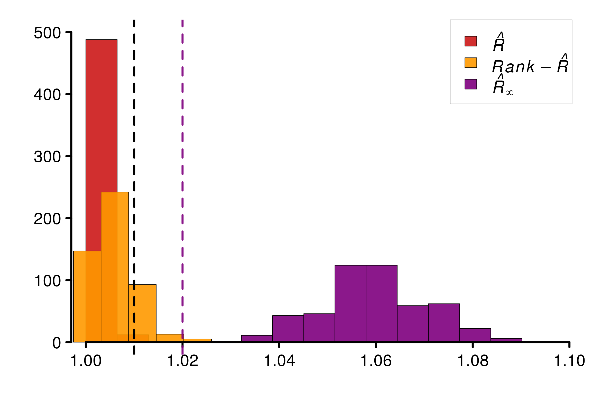
1.3 Threshold estimation
In this part we focus on the case where all the distributions are the same, to verify the behavior in the null hypothesis.
M <- 2
N <- 200
colors_same <- c(rgb(0.55, 0, 0.4, 0.8), rgb(0.4, 0, 0.7, 0.8), rgb(0.5, 0, 0.5, 0.9))
R_matrix_same_unif <- repetitions_R(chains_func = (function() gen_chains(M, N, uniform_rdists)),
r_func = c(rhat_infinity),
r_names = c("Uniform"),
reps = reps)
R_matrix_same_par <- repetitions_R(chains_func = (function() gen_chains(M, N, pareto_rdists)),
r_func = c(rhat_infinity),
r_names = c("Pareto"),
reps = reps)
R_matrix_same_unif_par <- cbind(R_matrix_same_unif, R_matrix_same_par)
xlabels = c(1, 1.01, 1.02, 1.03, 1.04)
plot_hist(R_matrix_same_unif_par, colors = colors_same, plot_threshold = F,
threshold = 1.01001, xlabels = xlabels, bin_size = 0.0020,
lim_y_axis = 200, vaxis_pos = 0.9985, plot_legend = F)M <- 4
N <- 100
R_matrix_same_unif <- repetitions_R(chains_func = (function() gen_chains(M, N, uniform_rdists)),
r_func = c(rhat_infinity),
r_names = c("Uniform"),
reps = reps)
R_matrix_same_par <- repetitions_R(chains_func = (function() gen_chains(M, N, pareto_rdists)),
r_func = c(rhat_infinity),
r_names = c("Pareto"),
reps = reps)
R_matrix_same_unif_par <- cbind(R_matrix_same_unif, R_matrix_same_par)
xlabels = c(1, 1.01, 1.02, 1.03, 1.04)
plot_hist(R_matrix_same_unif_par, colors = colors_same, plot_threshold = F,
xlabels = xlabels, bin_size = 0.002, threshold = 1.02,
lim_y_axis = 200, vaxis_pos = 0.9985, plot_legend = F)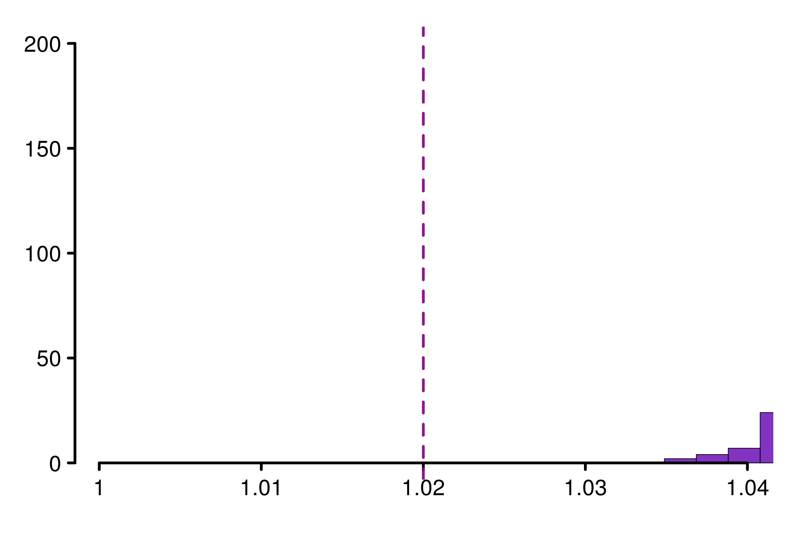
M <- 8
N <- 50
R_matrix_same_unif <- repetitions_R(chains_func = (function() gen_chains(M, N, uniform_rdists)),
r_func = c(rhat_infinity),
r_names = c("Uniform"),
reps = reps)
R_matrix_same_par <- repetitions_R(chains_func = (function() gen_chains(M, N, pareto_rdists)),
r_func = c(rhat_infinity),
r_names = c("Pareto"),
reps = reps)
R_matrix_same_unif_par <- cbind(R_matrix_same_unif, R_matrix_same_par)
xlabels = c(1, 1.01, 1.02, 1.03, 1.04)
plot_hist(R_matrix_same_unif_par, colors = colors_same, plot_threshold = F,
threshold = 1.03, xlabels = xlabels, bin_size = 0.002,
lim_y_axis = 200, vaxis_pos = 0.9985)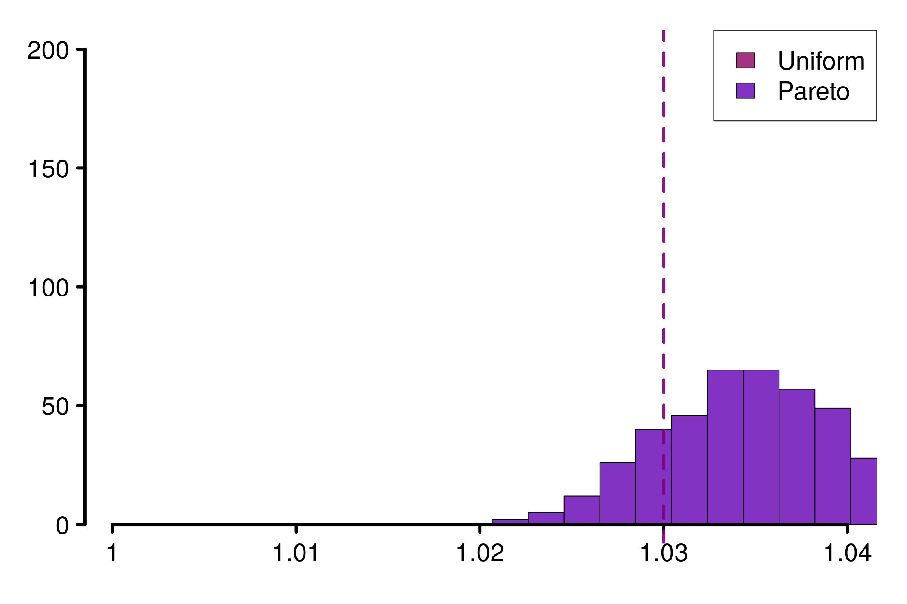
1.4 Summary
data=data.frame(r_version, r_experiment, r_values)
ggplot(data, aes(x=r_experiment, y=r_values, fill=r_version)) +
geom_boxplot() +
geom_hline(yintercept=1.01, linetype="dashed",
color = "black", size=0.5) +
geom_hline(yintercept=1.02, linetype="dashed",
color = "green", size=0.5) +
xlab("Experiments") + ylab("Values")
2 Multivariate examples
In the multivariate case when \(\boldsymbol{\theta}=(\theta_1, \ldots, \theta_d)\in{\mathbb R}^d\), we suggest to apply \(\hat{R}\) on a multivariate indicator variable \(I_{\boldsymbol{x}}^{(j)} = \mathbb{I}\{\theta_1^{(j)} \leq x_1, \ldots, \theta_d^{(j)} \leq x_d\}\) for any \(\boldsymbol{x} = (x_1, \ldots, x_d) \in \mathbb{R}^d\) in two steps:
Thus we recommend to compute the multivariate version only in the case where all the univariate one doesn’t detect any convergence issue, this is why in the part we will focus only of cases where the margins are the same (for example uniform).
library("MASS") # For Multivariate Normal Distribution
library("stableGR") # For the R-hat version of Vats and Knudson (2018)
library("coda") # For an implementation of the multivariate R-hat of Brooks and Gelman (1998)
library("rWishart") # Wishart distribution
library("mcmc") # for logit data
library("ggridges")
brooks_multivariate_rhat <- function(chaines){
R_star_chains = aperm(chaines, c(1, 3, 2))
return (r_hat_multivariate(R_star_chains, split_chains = F))
}
coda_multivariate_rhat <- function(chaines){
chaines_list = list()
for (i in 1:dim(chaines)[3]){
mcmc_ch <- as.mcmc(chaines[,,i])
chaines_list[[i]] <- as.mcmc(chaines[,,i])
}
mcmc_chains = do.call(mcmc.list, list(chaines_list))
return (gelman.diag(mcmc_chains)$mpsrf)
}2.1 Bivariate Case: Normal distributions
In this section, we focus on two-dimensional parameters on which we aim at diagnose convergence of the corresponding MCMC (with any number of chains). This restriction allows to navigate easily between the positive dependence and the negative one of the two components.
In particular, we consider bivariate normal densities with zero means, and compare \(m-1\) chains with identity covariance matrix, and one with non-zero off-diagonal elements \(\rho \in (-1,1)\).
We start by define the function that will allows us to generate \(m\) chains of size \(n\) with this configuration :
gen_bvnormal_chains <- function(M, N, rho){
sig_matrix <- (1-rho) * diag(2) + matrix(rho, nrow=2, ncol=2)
return (array(c(mvrnorm((M-1)*N, mu = rep(0, 2), Sigma = diag(2)),
mvrnorm(N, mu = rep(0, 2), Sigma = sig_matrix)), c(N,2,M)))
}As an example, we consider the case with \(m=2\) chains of size \(n=100\), and \(\rho = 0.9\) on the last chain. This choice of \(n\) relatively small is due to the fact the elements in the chain are i.i.d here, so \(n\) can be seen as an effective sample size for a given chain here.
rho <- 0.9
M <- 2
N <- 200
chains <- gen_bvnormal_chains(M, N, rho)
rhat_infinity(chains, verbose = T)Threshold at confidence level 5%: 1.0125
Local R-hat obtained: 1.0245
p-value: 0.001
WARNING: A convergence issue has been diagnosed[1] 1.024456We simulate 100 experiments, which result as 100 draws of the different \(\hat{R}\).
Histogram of the corresponding values of \(\hat{R}_\infty\) and the multivariate \(\hat{R}\) of Brooks and Gelman (1998) :
rho <- 0.9
M <- 2
N <- 200
reps <- 100
r_functions = c(brooks_multivariate_rhat, rhat_infinity)
r_names = c("Brooks Multivariate R-hat", "R-hat-infinity")
r_colors = c(colors[4], colors[3])
R_matrix = repetitions_R(chains_func = (function() gen_bvnormal_chains(M, N, rho)),
r_func = r_functions,
r_names = r_names,
reps = reps)
xlabels = c(1, 1.02, 1.04, 1.06, 1.08, 1.1, 1.12)
plot_hist(R_matrix, colors = r_colors, bin_size = 0.0045,
lim_y_axis = 30, vaxis_pos = 0.995,
xlabels = xlabels, plot_threshold = F)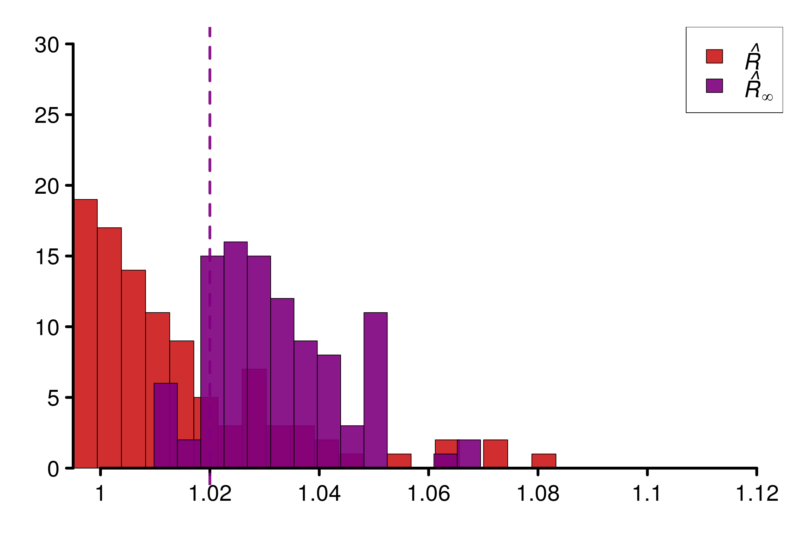
2.1.1 Evolution of the different value of \(\hat{R}\) with \(\rho\)
Except for \(R^*\), we consider the mean of the 100 draws for the different versions of \(\hat{R}\), and plot the evolution of this value with \(\rho\):
rho_list = c(-0.99, -0.9, -0.7, -0.5, -0.2, 0, 0.2, 0.5, 0.7, 0.9, 0.99)
d <- 2
M <- 2
N <- 500
reps <- 10
r_functions <- c(rhat_infinity, brooks_multivariate_rhat)
r_names <- c("R-hat-infinity", "Brooks R-hat")
R_values <- c()
x_val <- c()
theoretical_R <- c()
for (rho in rho_list){
R_val_rho = repetitions_R(chains_func = (function() gen_bvnormal_chains(M, N, rho)),
r_func = r_functions,
r_names = r_names,
reps = reps)
R_values = rbind(R_values, R_val_rho)
x_val = c(x_val, rep(rho, reps))
sig_matrix <- (1-rho) * diag(2) + matrix(rho, nrow=2, ncol=2)
dists <- c((function(q) mvtnorm::pmvnorm(upper = q, sigma = diag(2))[1]),
(function(q) mvtnorm::pmvnorm(upper = q, sigma = sig_matrix)[1]))
theoretical_R = c(theoretical_R, max_r_dist_bivariate(npoints = 200,
xlim = c(-3,3),
dists = dists))
}
par(mar=c(4,5.5,2,2))
plot(x=x_val, y=R_values[,1],
col = c(colors[3]), pch = 19,
xlab = expression(rho["m"]), ylab = "",
xaxs="i", yaxs="i", bty = "n",
xaxt = "n", yaxt = "n",
cex.lab = 2, cex.main = 2,
lwd=9,
xlim = c(-1.01, 1.02), ylim = c(0.999,1.155))
points(x=x_val, y=R_values[,2],
col = c(colors[4]), pch = 19,
lwd=9)
lines(rho_list, theoretical_R, type="l", col = colors[2], lwd=6, lty = 2)
points(x=rho_list, y=theoretical_R,
col = c(colors[2]), pch = 19,
lwd=9)
xlabels = c(1, 1.03, 1.06, 1.09, 1.12, 1.15)
ylabels = c(-1, -0.5, 0, 0.5, 1)
axis(1, labels=ylabels, at=ylabels, cex.axis=2, lwd=3, mgp = c(1,1,0))
axis(2, labels=xlabels, at=xlabels, cex.axis=2, mgp = c(1,0.5,0), lwd=2)
legend(x=0.6, y=1.14, col=c(colors[4], colors[3], colors[2]), pch=19,
legend = c(expression(italic(hat(R))),
expression(italic(hat(R)[infinity])),
expression(italic(R[infinity]))), cex=2)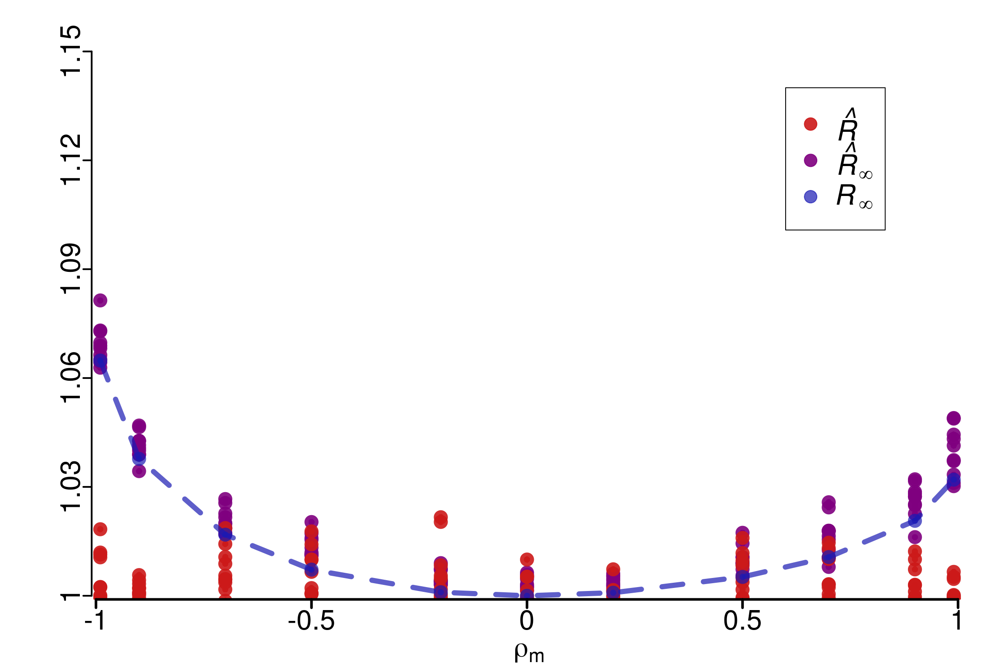
Remarks :
- Our version is the most sensitive, and is more sensitive as \(|\rho|\) increases (which is great)
- The asymmetry can be link to the theoretical computations. WARNING: in the case where \(d=2\), the orders on the two bounds PQD and NQD are inverted (compared to the asymptotic behavior), and that is why here we are more sensitive when \(\rho < 0\) (which is counter-intuitive)
2.2 General number of dimensions
2.2.1 Generation of a covariance matrix
In the general case, we still compare \(m-1\) chains that follows a multivariate normal distribution with identity covariance matrix with one that has a given covariance matrix \(\Sigma\).
We generate \(\Sigma\) from a sample of a Wishart distribtution \(S\), and in order to keep the same margins for our chains, we transform \(S\) to have ones on the diagonal : \[ \Sigma = D^{-1/2} S D^{-1/2}, \quad \text{ with } \quad D = \text{Diag}\left(s_{1,1}, \ldots, s_{d,d}\right) \]
From the theoretical part, we know that the value given by \(\hat{R}_\infty\) depends on the direction of dependence. Thus, we can either fix \(\Sigma\) and study the behaviour of the different \(\hat{R}\), or sample a new \(\Sigma\) for each draw of \(\hat{R}\).
generate_sigma_matrix <- function(d){
S <- rWishart(1, d, diag(d))[,,1]
S <- diag(1/sqrt(diag(S))) %*% S %*% diag(1/sqrt(diag(S)))
return (S)
}
gen_mvnormal_chains <- function(M, N, d, S=NULL){
if (is.null(S)){
S <- generate_sigma_matrix(d)
}
return (array(c(mvrnorm((M-1)*N, mu = rep(0, d), Sigma = diag(d)),
mvrnorm(N, mu = rep(0, d), Sigma = S)),
c(N,d,M)))
}First, we start by considering \(d=5\) and study the behavior of \(\hat{R}_\infty\) and the multivariate \(\hat{R}\) of Brooks and Gelman (1998) on a given \(\Sigma\) for the last chain:
d <- 5
M <- 4
N <- 100
reps <- 100
r_functions <- c(brooks_multivariate_rhat, rhat_infinity)
r_names <- c("Brooks Multivariate R-hat", "R-hat-infinity")
r_colors <- c(colors[3], colors[4])
S <- generate_sigma_matrix(d)
print(S) [,1] [,2] [,3] [,4] [,5]
[1,] 1.0000000 -0.67289587 -0.8116578 0.27111833 -0.15643808
[2,] -0.6728959 1.00000000 0.5652830 0.11993363 0.09229557
[3,] -0.8116578 0.56528305 1.0000000 0.25080351 0.21448793
[4,] 0.2711183 0.11993363 0.2508035 1.00000000 -0.02406259
[5,] -0.1564381 0.09229557 0.2144879 -0.02406259 1.00000000R_matrix <- repetitions_R(chains_func = (function() gen_mvnormal_chains(M, N, d, S)),
r_func = r_functions,
r_names = r_names,
reps = reps)
plot_hist(R_matrix, colors = r_colors, bin_size = 0.002,
lim_y_axis = 25, vaxis_pos = 1,
plot_threshold = F)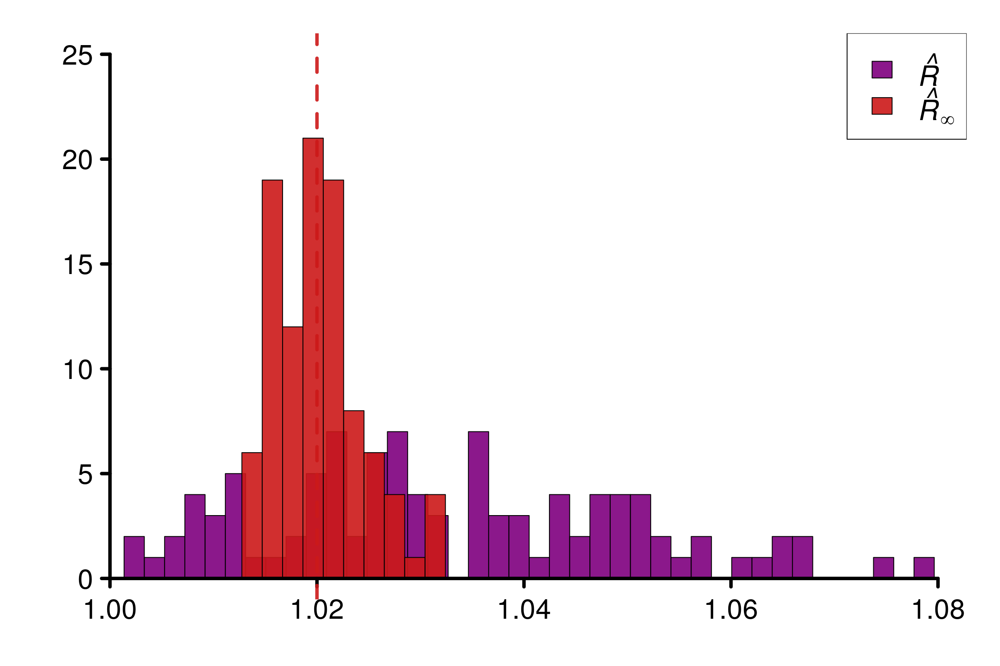
Doing the same experiment but with a new \(\Sigma\) on each repetitions will result on a histogram more spread for \(\hat{R}_\infty\):
d <- 5
M <- 4
N <- 100
reps <- 100
r_functions <- c(brooks_multivariate_rhat, rhat_infinity)
r_names <- c("Brooks Multivariate R-hat", "R-hat-infinity")
r_colors <- c(colors[3], colors[4])
R_matrix <- repetitions_R(chains_func = (function() gen_mvnormal_chains(M, N, d)),
r_func = r_functions,
r_names = r_names,
reps = reps)
xlabels = c(1, 1.02, 1.04, 1.06, 1.08)
plot_hist(R_matrix, colors = r_colors,
xlabels = xlabels, bin_size = 0.002,
lim_y_axis = 20, vaxis_pos = 0.997,
plot_threshold = F)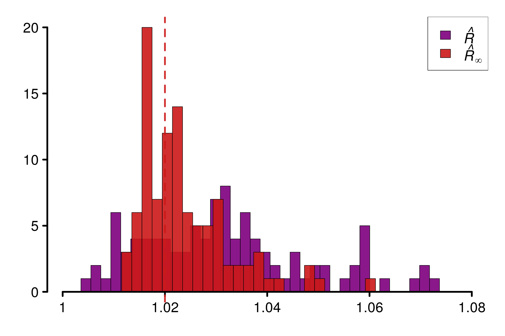
To avoid this issue, \(\hat{R}_\infty\) can be computed on all directions, which means if \(d=3\) that \(\hat{R}\) is computed on \[ I\left(\theta_1^{(n,m)} \leq x_1, \theta_2^{(n,m)} \leq x_2, \theta_3^{(n,m)} \leq x_3\right)\\ I\left(\theta_1^{(n,m)} \geq x_1, \theta_2^{(n,m)} \leq x_2, \theta_3^{(n,m)} \leq x_3\right)\\ I\left(\theta_1^{(n,m)} \leq x_1, \theta_2^{(n,m)} \geq x_2, \theta_3^{(n,m)} \leq x_3\right)\\ I\left(\theta_1^{(n,m)} \geq x_1, \theta_2^{(n,m)} \geq x_2, \theta_3^{(n,m)} \leq x_3\right)\\ \] The other half of the possibilities is avoided by symmetry. Then, we can define \(\hat{R}^{(\text{max})}_\infty\) as the maximum of all the \(\hat{R}_\infty\) computed on all directions. Despite a unreasonable computational cost (with \(2^{d-1}\) \(\hat{R}_\infty\) to compute), this solutions seems satisfying in small dimension:
d_max = 6
M = 4
N = 100
reps = 200
r_functions = c(rhat_infinity, rhat_infinity_max_directions)
r_names = c("One Direction", "All Directions")
R_values = repetitions_R(chains_func = (function() gen_mvnormal_chains(M, N, 2)),
r_func = r_functions,
r_names = r_names,
reps = reps)
R_array = array(c(R_values[,1], rep("d = 2", reps), rep("1 Dir", reps)), dim = c(reps,3))
R_array = rbind(R_array, array(c(R_values[,2], rep("d = 2", reps), rep("All Dir", reps)), dim = c(reps,3)))
colnames(R_array) = c("Values", "Dim", "Nb_Dir")
for (d in 3:d_max){
R_val_d = repetitions_R(chains_func = (function() gen_mvnormal_chains(M, N, d)),
r_func = r_functions,
r_names = r_names,
reps = reps)
d_names = c(paste("d =", d))
R_array = rbind(R_array, array(c(R_val_d[,1], rep(d_names, reps), rep("1 Dir", reps)), dim = c(reps,3)))
R_array = rbind(R_array, array(c(R_val_d[,2], rep(d_names, reps), rep("All Dir", reps)), dim = c(reps,3)))
}
R_df = as.data.frame(R_array)
R_df$Values = as.numeric(R_df$Values)
# pdf(file = "/scratch/tmoins/Documents/Code_rhat/figure_article/hist_directions.pdf", width = 18, height = 8)
ggplot(R_df, aes(x = Values, y = as.factor(Dim), fill = Nb_Dir)) +
geom_density_ridges(stat = "binline", bins= 40,
scale = 1, alpha = 0.7) +
scale_y_discrete(limits = R_df$Dim) +
ylab("Dimensions") + labs(fill = element_blank()) +
scale_x_continuous(limits = c(1,1.14),
n.breaks = 8) +
scale_fill_manual(values=c("#32a632", "#4287f5")) +
theme_ridges(font_size=22)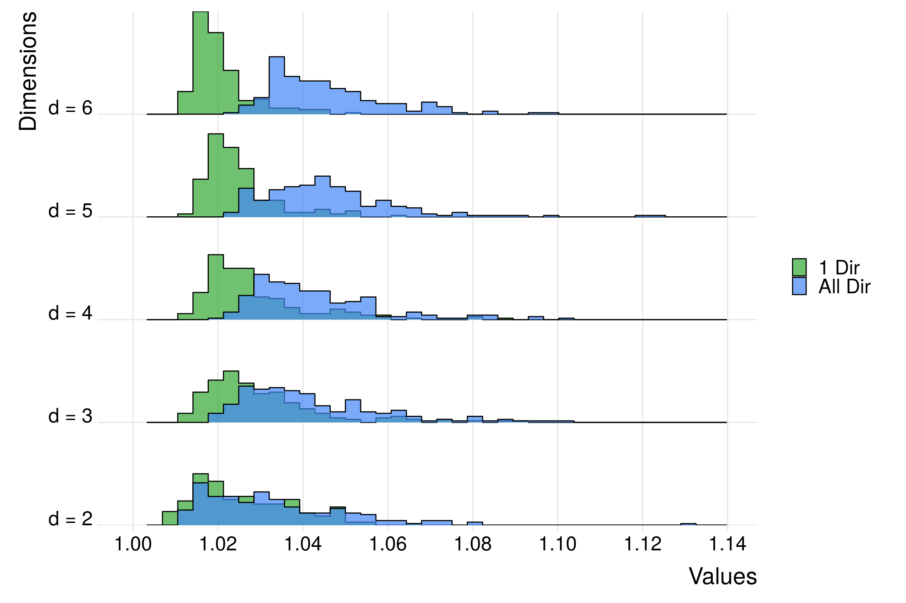
# dev.off()(WARNING: \(d>6\) the chunk is very dangerous to run!!)
2.3 Logistic regression
As a practical bayesian example, we consider hierarchical logistic regression using the following model:
writeLines(readLines(paste(stan_folder, "logit_reg.stan", sep="")))data {
int<lower=1> D;
int<lower=0> N;
real<lower=0> tau;
int<lower=0, upper=1> y[N];
real x[N,D];
}
parameters {
real bet[D];
}
model {
for (d in 1:D)
bet[d] ~ normal(0, tau);
for (n in 1:N)
y[n] ~ bernoulli(inv_logit(dot_product(x[n], bet)));
}We run Stan using the dataset available in the package .
data("logit")
d <- 4
logit_data<- read_rdump(paste(stan_folder, "logit_reg.data.R", sep=""))
fit_logit <- stan(file = paste(stan_folder, "logit_reg.stan", sep=""),
data=logit_data, seed = 12,
iter=200, chains=4, refresh=0)Running /usr/lib/R/bin/R CMD SHLIB foo.c
gcc -std=gnu99 -std=gnu11 -I"/usr/share/R/include" -DNDEBUG -I"/scratch/tmoins/R/x86_64-pc-linux-gnu-library/4.1/Rcpp/include/" -I"/scratch/tmoins/R/x86_64-pc-linux-gnu-library/4.1/RcppEigen/include/" -I"/scratch/tmoins/R/x86_64-pc-linux-gnu-library/4.1/RcppEigen/include/unsupported" -I"/scratch/tmoins/R/x86_64-pc-linux-gnu-library/4.1/BH/include" -I"/scratch/tmoins/R/x86_64-pc-linux-gnu-library/4.1/StanHeaders/include/src/" -I"/scratch/tmoins/R/x86_64-pc-linux-gnu-library/4.1/StanHeaders/include/" -I"/scratch/tmoins/R/x86_64-pc-linux-gnu-library/4.1/RcppParallel/include/" -I"/scratch/tmoins/R/x86_64-pc-linux-gnu-library/4.1/rstan/include" -DEIGEN_NO_DEBUG -DBOOST_DISABLE_ASSERTS -DBOOST_PENDING_INTEGER_LOG2_HPP -DSTAN_THREADS -DBOOST_NO_AUTO_PTR -include '/scratch/tmoins/R/x86_64-pc-linux-gnu-library/4.1/StanHeaders/include/stan/math/prim/mat/fun/Eigen.hpp' -D_REENTRANT -DRCPP_PARALLEL_USE_TBB=1 -fpic -g -O2 -fdebug-prefix-map=/build/r-base-J7pprH/r-base-4.1.2=. -fstack-protector-strong -Wformat -Werror=format-security -Wdate-time -D_FORTIFY_SOURCE=2 -g -c foo.c -o foo.o
In file included from /scratch/tmoins/R/x86_64-pc-linux-gnu-library/4.1/RcppEigen/include/Eigen/Core:88:0,
from /scratch/tmoins/R/x86_64-pc-linux-gnu-library/4.1/RcppEigen/include/Eigen/Dense:1,
from /scratch/tmoins/R/x86_64-pc-linux-gnu-library/4.1/StanHeaders/include/stan/math/prim/mat/fun/Eigen.hpp:13,
from <command-line>:0:
/scratch/tmoins/R/x86_64-pc-linux-gnu-library/4.1/RcppEigen/include/Eigen/src/Core/util/Macros.h:628:1: error: unknown type name ‘namespace’
namespace Eigen {
^~~~~~~~~
/scratch/tmoins/R/x86_64-pc-linux-gnu-library/4.1/RcppEigen/include/Eigen/src/Core/util/Macros.h:628:17: error: expected ‘=’, ‘,’, ‘;’, ‘asm’ or ‘__attribute__’ before ‘{’ token
namespace Eigen {
^
In file included from /scratch/tmoins/R/x86_64-pc-linux-gnu-library/4.1/RcppEigen/include/Eigen/Dense:1:0,
from /scratch/tmoins/R/x86_64-pc-linux-gnu-library/4.1/StanHeaders/include/stan/math/prim/mat/fun/Eigen.hpp:13,
from <command-line>:0:
/scratch/tmoins/R/x86_64-pc-linux-gnu-library/4.1/RcppEigen/include/Eigen/Core:96:10: fatal error: complex: Aucun fichier ou dossier de ce type
#include <complex>
^~~~~~~~~
compilation terminated.
/usr/lib/R/etc/Makeconf:168: recipe for target 'foo.o' failed
make: *** [foo.o] Error 1mon <- monitor(fit_logit)
chains <- as.array(fit_logit)
dim_chains <- dim(chains)
rhat_inf <- c()
for (i in 1:dim_chains[3]) {
chains_i <- chains[, , i]
rhat_inf_i <- rhat_infinity(chains_i, max_nb_points = "ALL")
rhat_inf <- c(rhat_inf, rhat_inf_i)
}
mon[["Rhat_inf"]] <- rhat_inf
monInference for the input samples (4 chains: each with iter = 200; warmup = 100):
Q5 Q50 Q95 Mean SD Rhat Bulk_ESS Tail_ESS Rhat_inf
bet[1] 0.12 0.50 0.90 0.49 0.23 1.00 410 332 1.02
bet[2] 0.31 0.63 1.01 0.63 0.21 1.01 592 330 1.01
bet[3] -0.09 0.28 0.67 0.28 0.23 1.01 412 301 1.01
bet[4] 0.02 0.40 0.79 0.41 0.25 1.01 366 263 1.01
lp__ -56.71 -52.81 -51.61 -53.33 1.68 1.02 219 311 1.02
For each parameter, Bulk_ESS and Tail_ESS are crude measures of
effective sample size for bulk and tail quantities respectively (an ESS > 100
per chain is considered good), and Rhat is the potential scale reduction
factor on rank normalized split chains (at convergence, Rhat <= 1.01).summary(mon[1:d, 'Rhat']) Min. 1st Qu. Median Mean 3rd Qu. Max.
1.002 1.004 1.006 1.006 1.009 1.011 summary(mon[1:d, 'Rhat_inf']) Min. 1st Qu. Median Mean 3rd Qu. Max.
1.007 1.011 1.012 1.014 1.015 1.022 mon[d+1, "Rhat_inf"] lp__
1.015831 perm_chains <- aperm(chains, c(1,3,2))
rhat_infinity_max_directions(perm_chains)[1] 1.03357reps <- 50
gen_beta_logit <- function(i){
# fit_logit <- stan(file = paste(stan_folder, "logit_reg.stan", sep=""),
# data=logit_data,
# iter=200, chains=4, refresh=0)
# saveRDS(fit_logit, paste(stan_folder, "logit/logit_reg_", i, ".rds", sep=""))
fit_logit <- readRDS(paste(stan_folder, "logit/logit_reg_", i, ".rds", sep=""))
mon <- monitor(fit_logit)
chains <- as.array(fit_logit)
return (aperm(chains, c(1,3,2)))
}
r_functions = c(brooks_multivariate_rhat, rhat_infinity_max_directions)
r_names = c("Brooks Multivariate R-hat", "max-R-hat")
r_colors = c(colors[4], colors[2])
R_matrix_logit <- repetitions_R(chains_func = gen_beta_logit,
r_func = r_functions,
r_names = r_names,
reps = reps, saved_model = TRUE)
xlabels = c(1, 1.01, 1.02, 1.03, 1.04, 1.05)
plot_hist(R_matrix_logit, colors = r_colors, xlabels = xlabels,
vaxis_pos = 0.998, plot_threshold = F, threshold = 1.03,
bin_size = 0.003, lim_y_axis = 25)
gen_beta_logit_lp <- function(i){
fit_logit <- readRDS(paste(stan_folder, "logit/logit_reg_", i, ".rds", sep=""))
mon <- monitor(fit_logit)
chains <- as.array(fit_logit)
return (chains[, , 5])
}
r_functions <- c(trad_rhat, rhat, rhat_infinity)
r_names <- c("R-hat",
"Rank-R-hat",
"R-hat-infinity")
r_colors <- c(colors[4], colors[5], colors[3])
R_matrix_logit2 <- repetitions_R(chains_func = gen_beta_logit_lp,
r_func = r_functions,
r_names = r_names,
reps = reps, saved_model = TRUE)
xlabels = c(1, 1.01, 1.02, 1.03, 1.04, 1.05)
plot_hist(R_matrix_logit2, colors = r_colors, vaxis_pos = 0.998,
xlabels = xlabels, plot_threshold = T,
bin_size = 0.003, lim_y_axis = 25)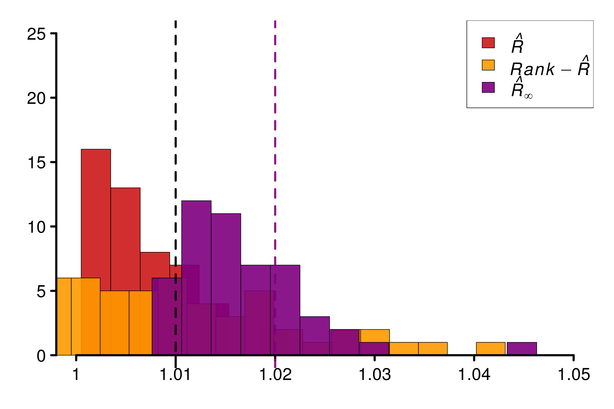